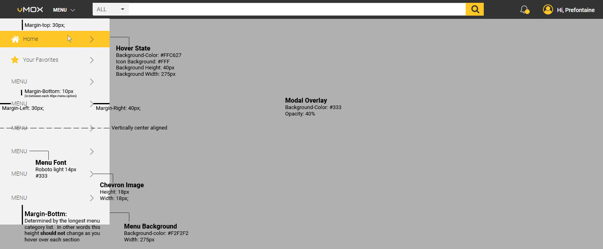
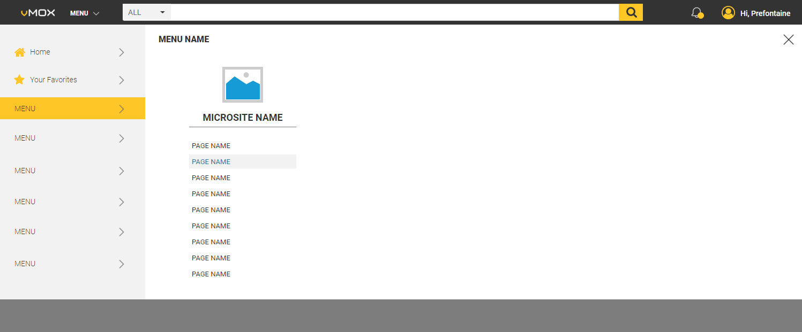
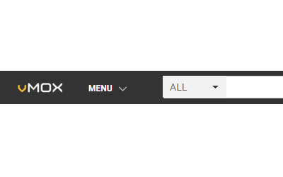

Because No One Ever Said "This Is Too Easy To Understand"
vMOX Mega Menu Navigation
Created May 10 2018
Composed by Craig Graham
Key Points - Mega Menu:
- Was designed to reinforce micro site mental model
- Should have a static height as the user changes categories
- Accessed by clicking on the menu dropdown in the header
- Is a modal drop down that can be closed by clicking off the menu in the modal overlay
- Mockup can be viewed at: vMOX Mega Menu Design Library Mockup
The vMOX mega menu was designed to reinforce the Micro Site mental model to our users through the use of categorization and iconography. The mega menu also prioritizes the user's primary navigation method, searching, by giving priority real estate to a filterable search bar. It's minimalistic design means we can keep the menu fixed to the top of the page and leverage Fitt's Law to increase usability. The menu structure follows Hick's Law to decrease complexity by breaking the menu into categories in order to increase recall and recognition.
Menu Interaction & Style
The user can view the mega menu drop down at any time by clicking the menu link or the down chevron located next to the menu link. Once the menu is visible the user will see each of the high level categories presented to them in size 14px Roboto #333 Light text. The mega menu is a modal dropdown, however if the user clicks anywhere on the modal overlay (background-color:#333, opacity 40%) then the mega menu will close. When the user hovers over one of the 40px tall by 275px wide links the background of the link is highlighted in vMOX gold (#FFC627) and the icon for that category, if present, is changed to have a #FFF background. The two standard link category icons are the Font Awesome Icons fa-home and fa-star for Home and Your Favorites respectively.
The screen shot below shows the mega menu while the user is hovering over the Home category, which is the only category that does not have a menu flyout associated with it.
Inital Menu View With Mouse Hovering Over Home
Every other menu category will show a menu flyout as shown in the screen shot below. The flyout should be a consistent height on every category and should be adjusted so that the mega menu overall height is greater than the height required to display the longest microsite menu list plus 30px of bottom padding.
Category Flyout with Three Microsite Menu Lists

Each category flyout contains between 1 and 3 microsite menu lists which are 200px wide and have a 80px padding. Microsite menu lists are added to the category flyout from left to right. So if there is only one list then it will be displayed on the left, not centered, as shown below.
Category Flyout with One Microsite Menu List
Responsive Design
Tablet
A tablet version of the mega menu mockup which has not yet been documented in this style guide, but can be viewed here: Tablet Mega Menu Design Library.
Mobile
Each category flyout contains between 1 and 3 microsite menu lists which are 200px wide and have a 80px padding. Microsite menu lists are added to the category flyout from left to right. So if there is only one list then it will be displayed on the left, not centered, as shown below.
The microsite list still has the icons as before to allow the user to recognize the microsite they may want to view rather then force them to recall it (more on recognition vs recall at: Nielsen Norman Group). Even though the microsite list is much shorter than the previous category list, we still present the user with the same length menu for the shake of consistency. Following the principle of User Control and Freedom we have included a back button in the microsite list menu so the user can return to the previous screen.
Mega Menu - Mobile View

Selecting a microsite presents the user with a new menu screen showing all of the pages organized under that microsite. Once again we keep the menu the same height and provide a back button for the user should they want to return to the previous screen.
To view the mobile mockup version of the mega menu please visit: Mobile Mega Menu Design Library Mockup.
Related Icons & Images
Similar Components

Header Bar